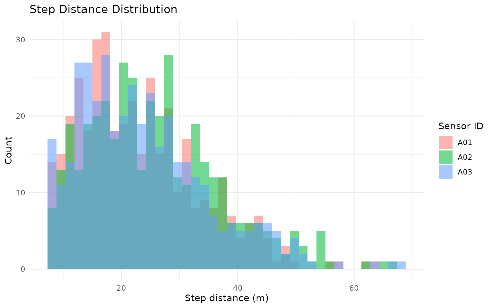
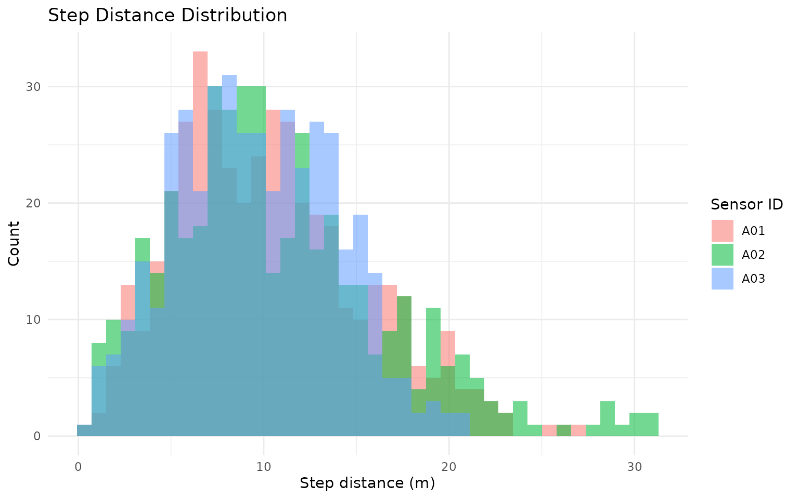
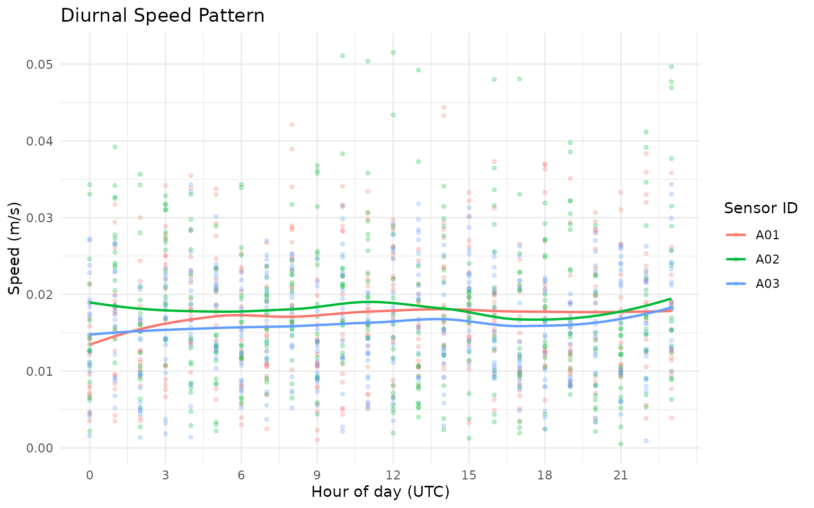
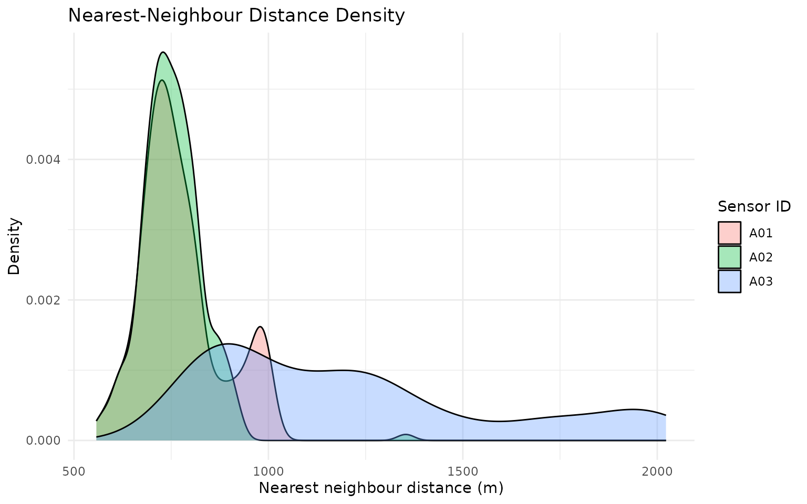
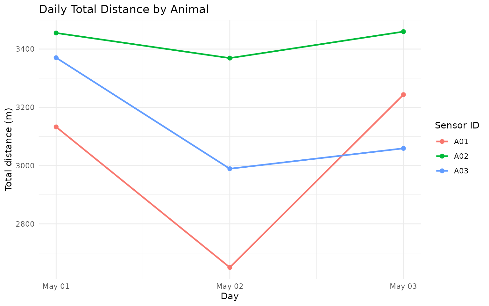
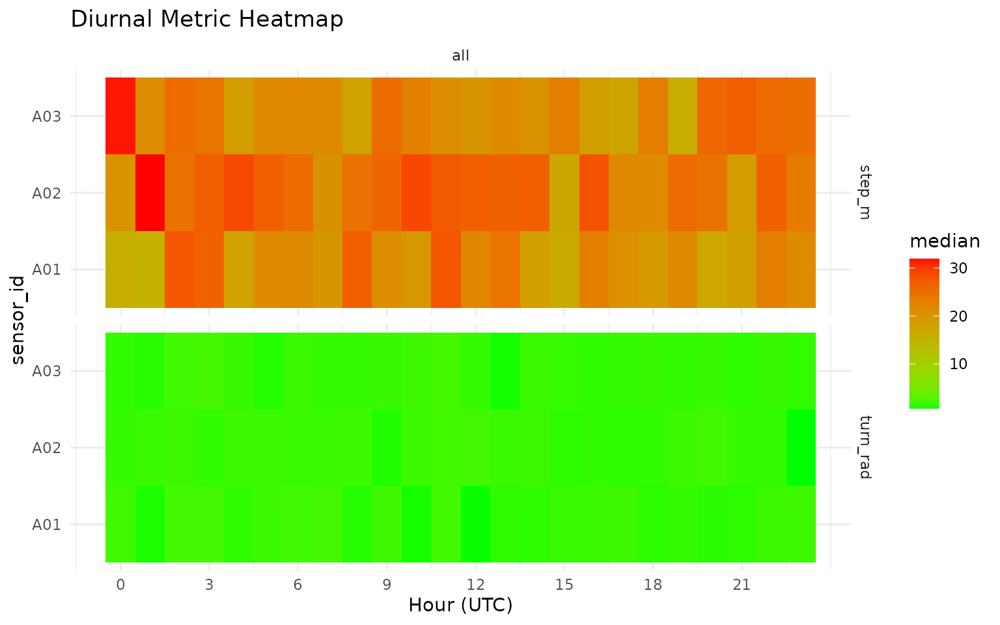

Overview
This tutorial walks through the main grazer workflow for
cattle GPS data:
- Start from GPS rows in canonical columns (
sensor_id,datetime,lon,lat). - Validate required schema and data types.
- Clean obvious errors and noise.
- Calculate movement, social, and spatial metrics.
- Summarise results to daily metrics for interpretation.
Why This Workflow?
A structured pipeline improves reproducibility and interpretation:
- You detect data issues before model fitting.
- You apply cleaning rules consistently across experiments.
- You generate comparable metrics across paddocks, cohorts, and deployments.
- You keep row-level and day-level outputs aligned for QA and reporting.
2) Create an example GPS table
This vignette uses synthetic data so it is fully reproducible.
In real projects, you would usually start with
grz_read_gps("your_file.csv").
How this works in practice:
- Keep raw ingest as close as possible to source files.
- Add only minimal transformations before validation.
- Preserve metadata columns so they can be used later in grouping and summaries.
Common pitfalls and checks:
- Pitfall: parsing datetimes in local time by accident.
Check: confirm all times are parsed in the same timezone (typically UTC). - Pitfall: silently coercing text coordinates to
NA.
Check: inspect rows with missing/invalidlon/latbefore cleaning.
set.seed(101)
timestamps <- seq(
from = as.POSIXct("2024-05-01 00:00:00", tz = "UTC"),
by = "10 min",
length.out = 3 * 24 * 6
)
animal_info <- tibble(
sensor_id = c("A01", "A02", "A03"),
lon0 = c(132.305, 132.299, 132.311),
lat0 = c(-14.474, -14.471, -14.468)
)
gps_list <- list()
for (i in seq_len(nrow(animal_info))) {
gps_list[[i]] <- tibble(
sensor_id = animal_info$sensor_id[i],
datetime = timestamps,
lon = animal_info$lon0[i] + cumsum(rnorm(length(timestamps), 0, 0.00018)),
lat = animal_info$lat0[i] + cumsum(rnorm(length(timestamps), 0, 0.00015))
)
}
gps_raw <- bind_rows(gps_list)
# Add a few realistic issues so validation and cleaning have visible effects.
gps_raw <- bind_rows(gps_raw, gps_raw %>% slice(1:5)) # duplicate rows
gps_raw$lon[20] <- 0 # invalid location (0,0)
gps_raw$lat[20] <- 0
gps_raw$datetime[33] <- NA # invalid datetime
nrow(gps_raw)
#> [1] 1301
head(gps_raw)
#> # A tibble: 6 × 4
#> sensor_id datetime lon lat
#> <chr> <dttm> <dbl> <dbl>
#> 1 A01 2024-05-01 00:00:00 132. -14.5
#> 2 A01 2024-05-01 00:10:00 132. -14.5
#> 3 A01 2024-05-01 00:20:00 132. -14.5
#> 4 A01 2024-05-01 00:30:00 132. -14.5
#> 5 A01 2024-05-01 00:40:00 132. -14.5
#> 6 A01 2024-05-01 00:50:00 132. -14.53) Validate required columns and row values
gps_valid <- grz_validate(
data = gps_raw,
drop_invalid = FALSE,
verbose = TRUE
)
#> [validate] rows=1,301 invalid=1 drop_invalid=FALSE
validation_qc <- attr(gps_valid, "validation_qc")
invalid_rows <- attr(gps_valid, "invalid_rows")
validation_qc
#> metric count proportion
#> <char> <int> <num>
#> 1: n_rows 1301 1.0000000000
#> 2: n_invalid_rows 1 0.0007686395
#> 3: n_missing_sensor_id 0 0.0000000000
#> 4: n_invalid_datetime 1 0.0007686395
#> 5: n_invalid_lon 0 0.0000000000
#> 6: n_invalid_lat 0 0.0000000000
head(invalid_rows)
#> sensor_id datetime lon lat invalid_reason
#> <char> <POSc> <num> <num> <char>
#> 1: A01 <NA> 132.3049 -14.47494 invalid_datetimeThe validation object provides:
-
validation_qc: counts/proportions of invalid records by issue type. -
invalid_rows: full rows that failed validation checks, withinvalid_reason.
How this works in practice:
-
grz_validate()enforces the minimum schema (sensor_id,datetime,lon,lat). - It parses and type-checks each core field.
- It records invalid reasons at row level so decisions are auditable.
Common pitfalls and checks:
- Pitfall: dropping invalid rows too early can hide data-logger
issues.
Check: run once withdrop_invalid = FALSEand inspectinvalid_rows. - Pitfall: blank
sensor_idvalues across multiple animals.
Check: verifysensor_iduniqueness and completeness before movement metrics.
4) Clean the GPS rows
This run applies four common cleaning steps:
-
duplicates: removes repeated fixes. -
errors: drops invalid coordinates and malformed rows. -
speed_fixed: removes biologically implausible moves. -
denoise: reduces local GPS bounce in static periods.
gps_clean <- grz_clean(
data = gps_valid,
steps = c("duplicates", "errors", "speed_fixed", "denoise"),
max_speed_mps = 4,
verbose = TRUE
)
#> [clean] start_rows=1,301
#> [clean_duplicates] dropped: 5 | rows: 1,301 -> 1,296
#> [clean_errors] dropped_sensor=0 dropped_datetime=1 dropped_coord=0 dropped_zero_zero=1
#> [clean_errors] dropped: 2 | rows: 1,296 -> 1,294
#> [clean_speed_fixed] threshold=4.000 m/s
#> [clean_speed_fixed] dropped: 0 | rows: 1,294 -> 1,294
#> [denoise] radius_m=8.0 max_gap_mins=20.0
#> [denoise] dropped: 108 | rows: 1,294 -> 1,186
#> [clean] final_rows=1,186
nrow(gps_clean)
#> [1] 1186
head(gps_clean)
#> sensor_id datetime lon lat
#> 1 A01 2024-05-01 00:00:00 132.3049 -14.47395
#> 2 A01 2024-05-01 00:10:00 132.3050 -14.47391
#> 3 A01 2024-05-01 00:20:00 132.3049 -14.47379
#> 4 A01 2024-05-01 00:30:00 132.3050 -14.47394
#> 5 A01 2024-05-01 00:40:00 132.3050 -14.47372
#> 6 A01 2024-05-01 00:50:00 132.3052 -14.47383How this works in practice:
- Cleaning is intentionally drop-based and ordered.
- Duplicate and invalid coordinate fixes are removed first.
- Speed filtering removes biologically implausible jumps.
- Denoising removes jitter during likely static periods.
Common pitfalls and checks:
- Pitfall: speed threshold too strict for your production class (e.g.,
mustering).
Check: inspect upper speed tail before settingmax_speed_mps. - Pitfall: aggressive denoising in coarse sampling intervals.
Check: compare pre/post row counts by animal and day.
5) Calculate movement metrics (row-level)
gps_movement <- grz_calculate_movement(gps_clean, verbose = FALSE)
movement_view <- gps_movement %>%
as_tibble() %>%
select(sensor_id, datetime, step_m, speed_mps, turn_rad)
movement_view
#> # A tibble: 1,186 × 5
#> sensor_id datetime step_m speed_mps turn_rad
#> <chr> <dttm> <dbl> <dbl> <dbl>
#> 1 A01 2024-05-01 00:00:00 NA NA NA
#> 2 A01 2024-05-01 00:10:00 11.5 0.0192 NA
#> 3 A01 2024-05-01 00:20:00 18.1 0.0302 2.00
#> 4 A01 2024-05-01 00:30:00 17.1 0.0284 2.58
#> 5 A01 2024-05-01 00:40:00 25.5 0.0425 2.66
#> 6 A01 2024-05-01 00:50:00 25.8 0.0430 1.82
#> 7 A01 2024-05-01 01:00:00 12.1 0.0202 0.623
#> 8 A01 2024-05-01 01:20:00 19.8 0.0165 0.532
#> 9 A01 2024-05-01 01:40:00 12.3 0.0103 1.74
#> 10 A01 2024-05-01 01:50:00 15.6 0.0259 2.21
#> # ℹ 1,176 more rows
movement_more <- setdiff(names(gps_movement), names(movement_view))
cat(
"i",
length(movement_more),
"more columns:",
paste(head(movement_more, 10), collapse = ", "),
if (length(movement_more) > 10) ", ..." else "",
"\n"
)
#> i 6 more columns: lon, lat, step_dt_s, bearing_deg, cum_distance_m, net_displacement_mKey movement variables:
-
step_m: great-circle distance between consecutive fixes. -
speed_mps: step distance divided by elapsed time in seconds. -
turn_rad: absolute turning angle (radians) between consecutive bearings.
How this works in practice:
-
step_mis great-circle distance between consecutive fixes. -
speed_mpsisstep_m / step_dt_s. -
turn_raduses the absolute difference in successive headings.
Common pitfalls and checks:
- Pitfall: irregular fix intervals inflate/deflate apparent
speed.
Check: inspectstep_dt_sdistribution. - Pitfall: first fix per track has no lag values.
Check: expectNAin first row of each group for lag-derived metrics.
gps_movement %>%
as_tibble() %>%
ggplot(aes(x = step_m, fill = sensor_id)) +
geom_histogram(bins = 40, alpha = 0.55, position = "identity") +
labs(
title = "Step Distance Distribution",
x = "Step distance (m)",
y = "Count",
fill = "Sensor ID"
) +
theme_minimal()
#> Warning: Removed 3 rows containing non-finite outside the scale range
#> (`stat_bin()`).
gps_movement %>%
as_tibble() %>%
mutate(hour = as.integer(format(datetime, "%H", tz = "UTC"))) %>%
ggplot(aes(x = hour, y = speed_mps, color = sensor_id)) +
geom_point(alpha = 0.25, size = 1) +
geom_smooth(se = FALSE, linewidth = 0.8) +
scale_x_continuous(breaks = seq(0, 23, by = 3)) +
labs(
title = "Diurnal Speed Pattern",
x = "Hour of day (UTC)",
y = "Speed (m/s)",
color = "Sensor ID"
) +
theme_minimal()
#> `geom_smooth()` using method = 'loess' and formula = 'y ~ x'
#> Warning: Removed 3 rows containing non-finite outside the scale range
#> (`stat_smooth()`).
#> Warning: Removed 3 rows containing missing values or values outside the scale range
#> (`geom_point()`).
6) Calculate social metrics (row-level)
gps_social <- grz_calculate_social(
gps_movement,
thresholds_m = c(30, 50, 100),
interpolate = FALSE,
verbose = FALSE
)
n30_col <- grep("^n_within_\\s*30m$", names(gps_social), value = TRUE)
if (length(n30_col) == 0L) {
stop("Expected a 30 m neighbour count column after grz_calculate_social().")
}
gps_social_tbl <- gps_social %>%
as_tibble() %>%
mutate(n_within_30m = .data[[n30_col[[1]]]])
social_view <- gps_social_tbl %>%
select(sensor_id, datetime, nearest_neighbor_m, n_within_30m, mean_dist_to_others_m)
social_view
#> # A tibble: 1,186 × 5
#> sensor_id datetime nearest_neighbor_m n_within_30m
#> <chr> <dttm> <dbl> <int>
#> 1 A01 2024-05-01 00:00:00 706. 0
#> 2 A01 2024-05-01 00:10:00 711. 0
#> 3 A01 2024-05-01 00:20:00 711. 0
#> 4 A01 2024-05-01 00:30:00 708. 0
#> 5 A01 2024-05-01 00:40:00 698. 0
#> 6 A01 2024-05-01 00:50:00 672. 0
#> 7 A01 2024-05-01 01:00:00 947. 0
#> 8 A01 2024-05-01 01:20:00 678. 0
#> 9 A01 2024-05-01 01:40:00 736. 0
#> 10 A01 2024-05-01 01:50:00 959. 0
#> # ℹ 1,176 more rows
#> # ℹ 1 more variable: mean_dist_to_others_m <dbl>
social_more <- setdiff(names(gps_social), names(social_view))
cat(
"i",
length(social_more),
"more columns:",
paste(head(social_more, 10), collapse = ", "),
if (length(social_more) > 10) ", ..." else "",
"\n"
)
#> i 15 more columns: lon, lat, step_dt_s, step_m, speed_mps, bearing_deg, turn_rad, cum_distance_m, net_displacement_m, social_group_size , ...Key social variables:
-
nearest_neighbor_m: distance to closest other animal at matching timestamp. -
n_within_30m: number of other animals within 30 m. -
mean_dist_to_others_m: average distance to all other animals.
How this works in practice:
- For each timestamp (and optional herd partition), pairwise distances are computed.
- Nearest-neighbour metrics and threshold counts are derived from the distance matrix.
- Threshold columns (
n_within_*m,any_within_*m) support density/proximity interpretation.
Common pitfalls and checks:
- Pitfall: unsynchronised timestamps between collars.
Check: usegrz_align()when needed before social metrics. - Pitfall: interpreting social isolation in very small group
sizes.
Check: inspectsocial_group_sizebefore interpretation.
gps_social_tbl %>%
ggplot(aes(x = nearest_neighbor_m, fill = sensor_id)) +
geom_density(alpha = 0.35) +
labs(
title = "Nearest-Neighbour Distance Density",
x = "Nearest neighbour distance (m)",
y = "Density",
fill = "Sensor ID"
) +
theme_minimal()
#> Warning: Removed 6 rows containing non-finite outside the scale range
#> (`stat_density()`).
gps_social_tbl %>%
mutate(day = as.Date(datetime)) %>%
group_by(sensor_id, day) %>%
summarise(mean_n_within_30m = mean(n_within_30m, na.rm = TRUE), .groups = "drop") %>%
ggplot(aes(x = day, y = mean_n_within_30m, color = sensor_id)) +
geom_line(linewidth = 0.9) +
geom_point(size = 1.8) +
labs(
title = "Daily Mean Number of Animals Within 30 m",
x = "Day",
y = "Mean n_within_30m",
color = "Sensor ID"
) +
theme_minimal()
7) Summarise to day-level movement, social, and spatial outputs
daily_metrics <- grz_calculate_epoch_metrics(
data = gps_social,
epoch = "day",
include = c("movement", "social", "spatial"),
verbose = FALSE
)
summary_view <- daily_metrics %>%
as_tibble() %>%
select(sensor_id, epoch, total_distance_m, mean_nn_m, mcp95_area_ha)
summary_view
#> # A tibble: 9 × 5
#> sensor_id epoch total_distance_m mean_nn_m mcp95_area_ha
#> <chr> <chr> <dbl> <dbl> <dbl>
#> 1 A01 2024-05-01 3133. 792. 4.32
#> 2 A01 2024-05-02 2651. 871. 5.32
#> 3 A01 2024-05-03 3244. 814. 4.91
#> 4 A02 2024-05-01 3455. 782. 6.01
#> 5 A02 2024-05-02 3369. 802. 8.08
#> 6 A02 2024-05-03 3460. 776. 4.36
#> 7 A03 2024-05-01 3370. 1050. 6.63
#> 8 A03 2024-05-02 2989. 980. 6.35
#> 9 A03 2024-05-03 3059. 1697. 8.54
summary_more <- setdiff(names(daily_metrics), names(summary_view))
cat(
"i",
length(summary_more),
"more columns:",
paste(head(summary_more, 10), collapse = ", "),
if (length(summary_more) > 10) ", ..." else "",
"\n"
)
#> i 21 more columns: n_fixes, mean_step_m, median_step_m, p95_step_m, mean_speed_mps, p95_speed_mps, max_speed_mps, mean_abs_turn_rad, social_n_fixes, p50_nn_m , ...Key summary variables:
-
total_distance_m: total distance moved over the epoch. -
mean_nn_m: mean nearest-neighbour distance over the epoch. -
mcp95_area_ha: 95% minimum convex polygon home-range area (ha).
How this works in practice:
- Epoch summaries aggregate row-level metrics to
day,week, ormonth. - Movement, social, and spatial blocks are merged on shared keys.
- Spatial area metrics are only meaningful with adequate fixes per epoch.
Common pitfalls and checks:
- Pitfall: over-interpreting area estimates from sparse days.
Check: screen byn_fixesbefore comparingmcp95_area_ha. - Pitfall: combining epochs with different grazing contexts.
Check: facet/stratify by paddock, cohort, or treatment when available.
daily_metrics %>%
as_tibble() %>%
mutate(epoch = as.Date(epoch)) %>%
ggplot(aes(x = epoch, y = total_distance_m, color = sensor_id, group = sensor_id)) +
geom_line(linewidth = 0.9) +
geom_point(size = 2) +
labs(
title = "Daily Total Distance by Animal",
x = "Day",
y = "Total distance (m)",
color = "Sensor ID"
) +
theme_minimal()
daily_metrics %>%
as_tibble() %>%
mutate(epoch = as.Date(epoch)) %>%
ggplot(aes(x = epoch, y = mcp95_area_ha, color = sensor_id, group = sensor_id)) +
geom_line(linewidth = 0.9) +
geom_point(size = 2) +
labs(
title = "Daily 95% MCP Area by Animal",
x = "Day",
y = "MCP95 area (ha)",
color = "Sensor ID"
) +
theme_minimal()
8) Diurnal feature plots
grz_plot_diurnal_metrics() gives an interpretable view
of how movement features vary by hour-of-day.
How this works in practice:
- Hour-of-day aggregation is applied per metric and group.
- Heatmaps highlight temporal structure that is useful for threshold setting.
Common pitfalls and checks:
- Pitfall: timezone mismatch between sensor logging and ecological
interpretation.
Check: set and verify timezone assumptions before diurnal plotting.
grz_plot_diurnal_metrics(
data = gps_social,
metrics = c("step_m", "turn_rad"),
group_col = "sensor_id",
agg_fun = "median",
scale = "none"
)
Next Step
Continue to the 201 tutorial for:
- active/inactive classification,
- manual state labelling with
grz_label_gps_states(), - and prediction-vs-label validation.
References
- Sinnott, R. W. (1984). Virtues of the Haversine. Sky and
Telescope, 68(2), 159.
Distance calculations ingrazeruse the great-circle (haversine) approach. - Burt, W. H. (1943). Territoriality and home range concepts as
applied to mammals.
Journal of Mammalogy, 24(3), 346-352.
Conceptual basis for home-range summaries such as MCP.